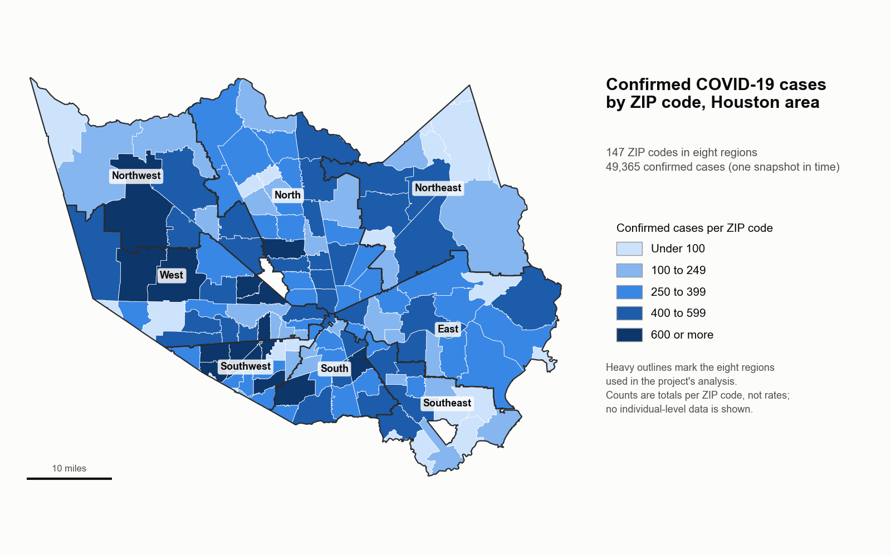

COVID-19 Last-Mile Distribution
Planning how scarce COVID-19 treatments and vaccines could reach Houston's most vulnerable neighborhoods first.
- Completed
- 2020–2021
- COVID-19
- Public health
- Supply chains
- GIS
- Houston

In plain English
When COVID-19 reached the United States in 2020, the neighborhoods hit hardest were often those with the least access to care. This project, funded by a National Science Foundation EAGER grant for early-stage, exploratory research, asked how a public health supply chain could get scarce treatments, and later vaccines, to the people most at risk first. It worked with the Houston Health Department, and it treated neighborhood providers and the home, not only hospitals, as the end of the supply chain.
The team built two things. A map of Houston ZIP codes brought together COVID-19 cases and deaths, social vulnerability, and access to hospitals. An optimization model then used that picture to decide how doses should flow from hubs through providers to each ZIP code, with a penalty for every person left unserved. The results were published in Frontiers in Future Transportation in 2021 and shared with the health department. Both parts have since been rebuilt as open code, so the maps and the model can be rerun and adapted for future outbreaks.
Main points
- Paired mapping with optimization, so the model's priorities came from where cases, deaths and social vulnerability overlapped.
- Weighed the cost of leaving people unserved alongside the cost of transport, asking who goes short and where, not only whether supply is enough.
- Compared equal distribution with distribution prioritized by a community health index, across eight supply scenarios.
- Both code repositories are public with archived releases: the vaccine supply chain model, and the Houston maps rebuilt in Python so no commercial GIS licence is needed.
- The approach carries over to any shortage where limited supplies must reach vulnerable communities first.
Interactive demoAccess and health →
Papers
Getting COVID-19 vaccines to the Houston neighborhoods that need them most
Jones, E.C., Azeem, G., Jones, E.C., Jr., Jefferson, F., Henry, M., Abolmaali, S., & Sparks, J. (2021). Understanding the last mile transportation concept impacting underserved global communities to save lives during COVID-19 pandemic. Frontiers in Future Transportation, 2, 732331. https://doi.org/10.3389/ffutr.2021.732331
When vaccine supply is short, a supply chain model that prioritizes vulnerable Houston neighborhoods can serve them almost fully while overall coverage stays low.
- At the vaccine supply available when the data were collected, equal distribution reached only 32% of the target group of about 654,000 people over 60 and health care workers.
- Doubling supply and provider capacity cut the shortage penalty from about $34 million to $22 million, and at four times supply everyone in the target group was served.
- Transport costs, including the last mile, rose as more people were served but stayed far below the cost of shortages in every scenario.
- Prioritizing ZIP codes by the Community Health Index served the most vulnerable communities at close to 100% even when overall coverage was about 31%.
- PaperRead the paper (open access)
- Codesear-labs/covid-optsc-ffutr-2021: reproduces the paper's vaccine supply chain model
- CodeArchived code release for citation (Zenodo DOI 10.5281/zenodo.22309107): covid-optsc-ffutr-2021
- Codesear-labs/houston-covid-gis: the paper's Houston COVID-19 maps, rebuilt in Python
- CodeArchived code release for citation (Zenodo DOI 10.5281/zenodo.22309109): houston-covid-gis
People
- Erick C. Jones Jr., PhD, PEFaculty investigator · SEAR Lab directorin
- Gohar AzeemAuthor, Frontiers in Future Transportation 2021
- Felicia JeffersonAuthor, Frontiers in Future Transportation 2021
- Marcia HenryAuthor, Frontiers in Future Transportation 2021
- Shannon AbolmaaliAuthor, Frontiers in Future Transportation 2021
- Janice SparksAuthor, Frontiers in Future Transportation 2021
Profiles marked in link to LinkedIn. More past and present lab members are on the SEAR Lab team page.